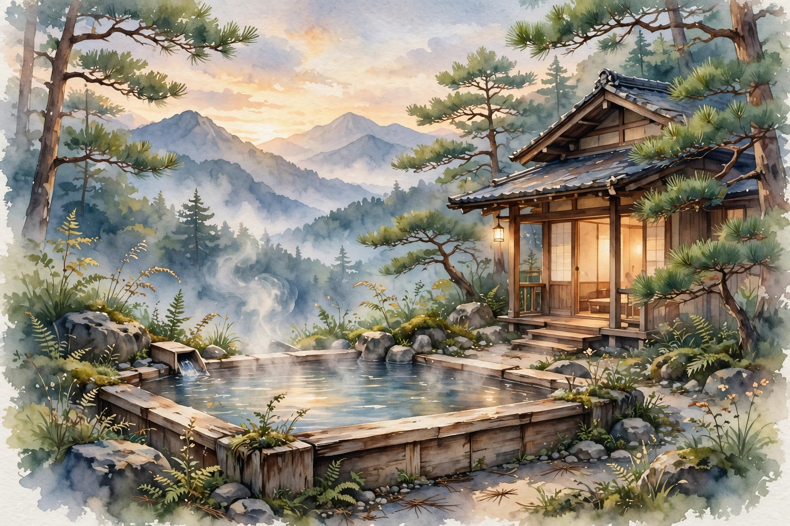

- 4検定
- 教科書 各5章
- 出題10問・7問以上で合格
- 旅ガチャ 全191種
本検定は独自教材にもとづく民間の認定で、公的な資格ではありません。
初めての人向け入口 GETTING STARTED
初めての方は、この3ステップでサイトの楽しみ方がわかります。まずは気になる検定をひとつ選んで、教科書から読み始めてみてください。
STEP
検定を受けてみる
お城・神社・温泉・地酒の4検定から、興味のあるものを選んで受けられます。各検定とも教科書（全5章）を読んでから、級とお名前を入力して試験を開始します。問題に答えると、その場で結果が分かり、7問以上の正解で認定番号つきの認定証が表示されます。
STEP
旅ガチャで集める
旅ガチャは、1日3回まで無料で回せるコレクションです。公式キャラクター・武将・名城・神社・神様の全191種類のカードが当たり、集めたカードはコレクション図鑑にたまっていきます。
STEP
城と武将を深掘りする
日本100名城コーナーでは、全100城を1城ずつ解説していて、訪れた城には「行った」の記録も付けられます。武将名鑑では、武将を名前の検索や時代・大名家・地域の絞り込みで探せて、主要武将には生涯や合戦を掘り下げた紹介があります。


※ 上の各検定カードの画像は、すべてカラーのイラストです（実物の写真ではありません）。
日本100名城 解説 100 CASTLES
日本城郭協会が選定した「日本100名城」全100城を、所在地・築城者と年代・城の形式・天守の現状・見どころまで、1城ずつ解説しています。お城検定の学習と、城めぐりの計画づくりにご活用ください。各城のページでは、その城のプラモデルや関連書籍（Amazonアソシエイト・リンク／PR）も、実在を確認できたものだけ紹介しています。
城と武術 CASTLE & MARTIAL ARTS
城は武術と切り離せない存在でした。城攻めと野戦のなかでの個人の武芸、流派が生まれた時代、甲冑と武器の変遷、忍びと城の攻防、江戸の道場文化、そして武術の目で縄張りや虎口を読む視点まで、全6本の読み物でたどります。各記事から、関連する日本100名城の解説ページへも進めます。
武将名鑑 WARLORDS
戦国武将を、名前検索と時代・大名家・地域の絞り込みで探せる名鑑です。織田信長・豊臣秀吉・徳川家康をはじめとする主要武将には、生涯・主な合戦・居城と関連城・武芸や武器のエピソードを掘り下げた「ディープ紹介」と、実在を確認できた関連作品（伝記・歴史小説など／PR）の紹介を付けました。収録人数は名鑑ページに明示し、段階的に増やしていきます。
旅ガチャ TABI GACHA
旅ガチャは、専用の独立サイトへ引っ越しました。公式キャラクター・戦国武将・日本100名城の名城に、全国の神社40社と神様24柱が加わった全191種類のカードを、1日3回まで無料で集められるコレクションです。神様のカードからは、神話の場面ギャラリー（全24柱・各10場面）も楽しめます。
旅ガチャは独立サイトで遊べます
ガチャを回す・コレクション図鑑・神話の場面ギャラリーは、すべて独立サイト「旅ガチャ」に移りました。下のボタンから移動できます（新しいタブで開きます）。
移行のご案内：コレクションの記録は、同じブラウザではそのまま引き継がれます。これまで集めたカードも、独立サイトの図鑑にそのまま表示されます。
温泉紹介 HOT SPRINGS
草津・有馬・下呂の日本三名泉、道後・白浜の日本三古湯、別府や登別など、全国の代表的な温泉地12か所を、所在地・泉質・見どころまで1か所ずつ紹介しています。温泉検定の学習と、湯めぐりの計画づくりにご活用ください。各温泉地のページでは、温泉の本や入浴剤（Amazonアソシエイト・リンク／PR）も、実在を確認できたものだけ紹介しています。
地酒紹介 JIZAKE
灘・伏見の二大産地から、新潟・山形・秋田・福島・西条・佐賀・青森・福井まで、全国の地酒どころ10地域を、代表的な酒蔵と銘柄・水と酒質の傾向まで1地域ずつ紹介しています。地酒検定の学習にご活用ください。各地域のページでは、日本酒の本や地酒の飲み比べセット（Amazonアソシエイト・リンク／PR）も、実在を確認できたものだけ紹介しています。
お酒は20歳になってから。20歳未満の飲酒は法律で禁止されています。
級のご案内 GRADES
各検定には、学習の深さに応じた3つの級があります。まずは3級から、教科書を読み進めながらステップアップしていく設計です。いずれの級も出題は10問・7問以上の正解で合格です。
3級
入門 ― まずはここから
城と神社の基礎知識を問う入門の級です。教科書の各章の「要点」を押さえれば十分に挑戦でき、初めての方や、これから城めぐり・神社めぐりを始めたい方に向けたレベルです。
2級
中級 ― 教科書をひととおり
教科書全5章の内容をひととおり理解していることが求められる中級の級です。天守の形式や石垣の技法、社殿の様式や祭神など、本文の細部まで読み込んで挑むレベルです。
1級
上級 ― 最上位の認定
歴史・建築・祭祀への深い知識に加え、現地で見分ける鑑識力が求められる最上位の級です。3級・2級の土台のうえに、名城や著名な神社への幅広い理解がある方の到達点です。
受験の流れ HOW IT WORKS
STEP
教科書で学ぶ
各検定の教科書（全5章）を読みます。各章末の「要点」が、そのまま試験の出題範囲です。
STEP
試験を受ける
級とお名前を入力して開始。問題プール20問から10問が出題され、回答のたびに解説を確認しながら進めます。
STEP
認定証を受け取る
7問以上の正解で合格。認定番号つきの認定証が表示され、印刷して手元に残せます。
城と神社のイベント予定表 UPCOMING EVENTS
これから開催されるお城と神社の行事を、日程順にまとめています。紅葉まつりやライトアップ、例大祭や七五三・初詣など、現地を訪れる計画づくりにご活用ください。
受験料とデータの取り扱い FEE & DATA
受験料：現在は無料で受験できます。正式な受験料は決定後にこのページでご案内します。
データの取り扱い：受験・採点・認定証の発行は、すべてお使いのブラウザの中で完結します。入力したお名前や受験履歴は、お使いの端末のブラウザ内（localStorage）にのみ保存され、サーバーへ送信・保存されることはありません。ブラウザのデータを消去すると履歴も消えますので、認定証は印刷して保管してください。
運営者情報 ABOUT THE OPERATOR
運営者：平賀伸人
この検定について：「日本の旅検定」（お城検定・神社検定・温泉検定・地酒検定）は、運営者が独自教材にもとづいて行う民間の学習検定です。国家資格などの公的な資格ではなく、公的機関による認定でもありません。認定証は、本サイトの試験に合格したことを証するものです。
お問い合わせ：お問い合わせや最新情報のご案内は、公式SNS（Instagram @tabi.kentei／Threads @tabi.kentei）で受け付けています。
認定証・認定番号の照合
合格すると、この端末のブラウザ内に認定証が保存されます。あわせて、認定番号の形式を確認できる照合フォームをご用意しています。
この端末で発行した認定証
認定番号の照合（形式確認）
認定証に記載された認定番号（例：SHIRO-20261026-0001）を入力すると、番号の形式が正しいかどうかを確認できます。この照合は形式の確認のみです。正式な照合は今後の運用開始後にご案内します。
日本100名城 解説
日本城郭協会が2006年に選定した「日本100名城」全100城の解説です。番号は公式スタンプの番号に合わせています。各城の所在地・築城者と年代・形式・天守の現状は、確認できた事実に基づいて記載しています。城名や地名で検索したり、地域で絞り込んだりできます。
温泉紹介 ― 全国の名湯12選
全国の代表的な温泉地12か所の紹介です。各温泉地の所在地・泉質・特徴は、確認できた事実に基づいて記載しています。温泉地名や地名で検索したり、地域で絞り込んだりできます。泉質は代表的なもので、源泉ごとに異なる場合があります。
地酒紹介 ― 全国の酒どころ10選
全国の代表的な地酒の産地10地域の紹介です。各地域の代表的な酒蔵と銘柄・水と酒質の傾向は、確認できた事実に基づいて記載しています。地域名や銘柄で検索したり、地域で絞り込んだりできます。
お酒は20歳になってから。20歳未満の飲酒は法律で禁止されています。このページは地酒の文化と産地を紹介するもので、飲酒をすすめるものではありません。
城と神社のブログ
名城めぐりと神社めぐりの実践情報、そして日本の旅検定（お城検定・神社検定）の学習に役立つ知識を発信しています。記事中のおすすめ本にはAmazon.co.jpへのリンク（PR）を含みます。
城と神社のイベント予定表
お城と神社でこれから開かれる行事を、日程順の予定表にまとめました。2026年10月〜2027年2月の開催分を掲載しています。各行事の出典リンクから、最新の実施状況を確認できます。
ご利用にあたって：この予定表は、2026年10月27日時点で主催者・自治体・報道などの公開情報で確認できた行事をまとめたものです。日程・時間・料金は変更や中止になる場合があります。お出かけ前に、必ず各行事の出典リンクや主催者の公式案内で最新の情報をご確認ください。
長期の取り組み：福井県坂井市の丸岡城では、天守の保存修理工事が2027年11月までの予定で進められています。工事の様子はブログ記事「丸岡城、天守保存修理の現場をライブ中継で公開」でも紹介しています。
ショップ ― おすすめ本・グッズ
城めぐり・神社めぐり・温泉・地酒と検定学習に役立つ、実在の書籍や商品を紹介します。リンク先はAmazon.co.jpです。お酒の商品が含まれます。お酒は20歳になってから。
PR 本ページの商品リンクはAmazonアソシエイト・リンクです。
すべてのおすすめ本・商品
当サイトは、Amazon.co.jpを宣伝しリンクすることによってサイトが紹介料を獲得できる手段を提供することを目的に設定されたアフィリエイトプログラムである、Amazonアソシエイト・プログラムの参加者です。価格・在庫はリンク先のAmazon.co.jpでご確認ください。
受験履歴
この端末のブラウザ内に保存された受験履歴です。サーバーには送信・保存されていません。ブラウザのデータを消去すると、この履歴も消えます。
間違えた問題の復習
城と武術
城攻めと野戦、流派の誕生、甲冑と武器、忍び、江戸の道場文化、そして武術の目で城を読む視点。城と武術の関わりをたどる全6本の読み物です。史実として確認できる内容を中心に書き、伝承として語られる話は、その旨を添えて紹介します。各記事の末尾から、関連する日本100名城の解説ページへ進めます。
武将名鑑
戦国武将の名鑑です。名前で検索したり、時代・大名家・地域で絞り込んだりできます。「ディープ紹介」の武将は、生涯・主な合戦と用兵・居城と関連城・武芸や武器のエピソード・人物像まで掘り下げ、関連作品（Amazonアソシエイト・リンク／PR）も紹介しています。史実と伝承は分けて記します。59人には水墨マンガ調の肖像イラストを付けました。